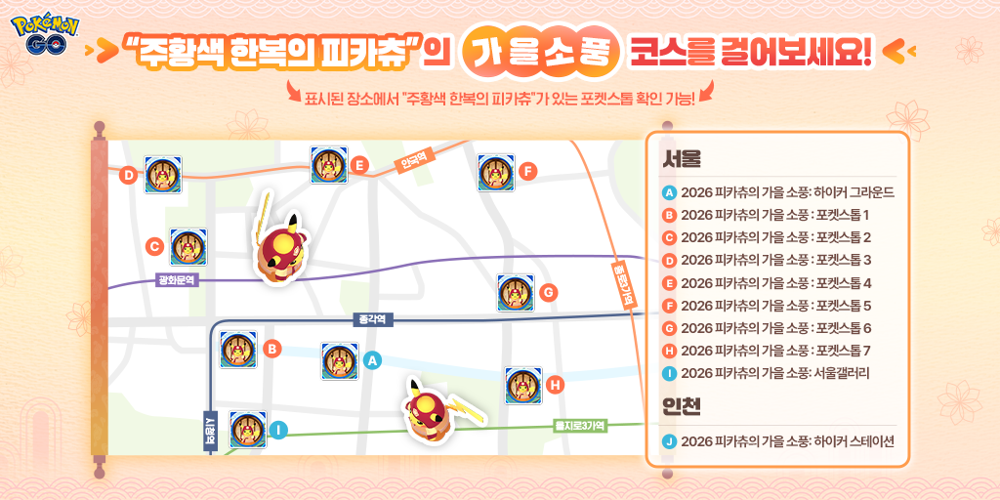

포켓몬고 주황색 한복 피카츄 만나는 법, 별1 레이드와 가을 소풍 리서치 10월 11일 종료 전에 챙기기
주황색 한복을 입은 피카츄 소식, 다들 보셨죠? 저도 공식 안내를 읽다가 제일 먼저 종료 시각부터 찾아봤는데요, 2026 피카츄의 가을 소풍은 10월 11일 일요일 저녁 8시에 끝나요. 오늘이 10월 8일이니까 딱 3일 남은 셈이네요.
이번 한복 피카츄는 전국 어디서나 나오는 게 아니라 서울과 인천 쪽 구역에서만 만날 수 있어서, 갈 수 있는 분들은 날짜부터 정해두시는 게 좋아요. 그래서 오늘은 만나는 길 세 갈래를 마감 전에 챙길 것만 골라 풀어볼게요 ㅎㅎ
주황색 한복 피카츄, 언제까지 어디서 만날 수 있나요?
한복 피카츄는 9월 18일부터 10월 11일 저녁까지 서울과 인천 구역에서 만날 수 있어요. 일정은 목록으로 적어 두고, 길은 크게 세 갈래라서 표로 갈라볼게요.
- 시작: 9월 18일 오전 10시(한국 시간)
- 종료: 10월 11일 일요일 오후 8시
- 구역: 서울 종로구·중구 일부 지역, 인천국제공항 하이커 스테이션
| 만나는 길 | 어떻게 하나요 | 어디서 하나요 |
|---|---|---|
| 별 1 레이드 | 레이드 도전 | 이벤트 구역 지정 체육관 |
| 시간제한 리서치 | 과제 완료 후 보상 수령(10월 11일 20:00까지) | 서울갤러리·하이커 그라운드 일대·인천국제공항 하이커 스테이션 구역 |
| 필드리서치 | 포켓스톱 과제 | 이벤트 장소 포켓스톱 |

공식 코스 지도예요.
이미지 출처: 포켓몬 GO 공식 뉴스 · 네이버 본문엔 받아서 재업로드 권장
지도를 보면 서울 9곳(하이커 그라운드, 포켓스톱 7곳, 서울갤러리)과 인천 하이커 스테이션 1곳이 표시돼 있고, 표시된 장소의 포켓스톱에서 한복 피카츄를 확인할 수 있다고 적혀 있어요. 서울 쪽은 종각·광화문·안국·을지로3가 일대가 한 장에 다 들어 있어서 동선을 짜기 편하답니다.
별 1 레이드로 주황색 한복 피카츄를 만나려면 어떻게 하나요?
이벤트 구역 안에서 지정된 체육관의 별 1 레이드에 들어가면 주황색 한복 피카츄를 만날 수 있어요.
- 지정 체육관은 이벤트 구역 안의 일부 체육관 15곳이에요.
- 체육관마다 하루에 한 번만 참여할 수 있어요.
- 리모트 레이드 패스는 쓸 수 없어요.
집이나 회사에서 슬쩍 들어가는 길이 없으니 현장에 가야 하고, 같은 곳을 반복해도 소용이 없어서 여러 체육관을 얼마나 도느냐가 승부예요. 공식 안내에는 15곳의 위치 목록이 공개돼 있지 않아서, 레이드가 열려 있을 때 보스가 한복 피카츄인지 보고 가려내는 수밖에 없는 듯해요.
지정 체육관에서 만난 별 1 레이드 보스예요.
가을 소풍 시간제한 리서치는 어디서 받고 뭘 주나요?
시간제한 리서치는 서울시청 지하 1층 서울갤러리, 서울 하이커 그라운드 일대, 인천국제공항 하이커 스테이션 구역에서 받을 수 있어요. 과제를 끝내는 것만이 아니라 보상 수령까지 마감 안에 마쳐야 하니 시간은 넉넉히 잡으세요.
- 마감: 10월 11일 오후 8시(한국 시간)까지 완료·수령
- 2,026 XP
- 주황색 한복 피카츄 만남
- 프리미엄 배틀패스 1개
- 이벤트 테마 스티커
경험치 숫자가 올해 연도랑 똑같이 2,026이라 괜히 반갑더라고요~ 서울갤러리는 서울시청 지하 1층(세종대로 110)에 있고 입장은 무료인데요, 서울시 안내에는 이곳 포켓스톱과 체육관에서도 한복 피카츄를 만날 수 있다고 소개돼 있어요.
과제와 보상을 한 화면에 담았어요.
필드리서치랑 이벤트 보너스로는 뭘 더 챙기나요?
포켓스톱 필드리서치에서도 한복 피카츄를 만날 수 있고 이벤트 보너스도 따로 붙어서, 서울에서 포켓스톱을 그냥 지나치면 아까워요.
- 필드리서치 보상: 주황색 한복 피카츄 만남
- 필드리서치 보상: 이벤트 테마 포켓몬 만남
- 필드리서치 보상: 별의모래
- 필드리서치는 포켓스톱당 하루 1개만 받을 수 있음
- 루어 모듈 지속 시간 2시간
- 맵에 이벤트 테마 효과 표시
한 스톱에서는 하나뿐이라 여러 곳을 거칠수록 쌓이는 구조예요. 이벤트 구역을 걷는 김에 스톱마다 들러 두면 아깝지 않게 챙기죠.
테마 효과가 깔린 맵이에요.
가기 전에 체크할 건 뭐가 있나요?
이벤트존 운영 시간과 안전 수칙 두 가지만 먼저 보면 헛걸음을 줄일 수 있어요.
| 날짜 | 포켓몬 GO 이벤트존 운영(서울시 안내) |
|---|---|
| 10월 9일(금·한글날) | 공휴일 오전 10시~오후 6시 |
| 10월 10일(토) | 오전 10시~오후 7시 |
| 10월 11일(일) | 오전 10시~오후 5시 |
일요일은 이벤트존이 오후 5시에 닫는데 이벤트 종료는 저녁 8시라서, 마지막 날 들를 계획이면 오전에 일찍 가시는 편이 안전합니다. 다만 서울시 안내에는 서울갤러리 자체 운영시간이 이 표와 따로 적혀 있고 거기엔 일요일이 휴무로 나와 있어서, 일요일 방문은 미리 확인이 필요해요. 안전 쪽은 공식 안내가 걸어 다니며 화면만 보지 말고 지역 방침을 따르라고 당부하고 있고, 이벤트 내용이 바뀌거나 중단될 수도 있다고 적어 뒀어요.
확인 위치: 이벤트 구역에서 레이드가 열린 체육관의 보스 표시 · 확인되면 아래에 채워주세요.
| 항목 | 값(확인 후 입력) |
|---|---|
| 지정 체육관 15곳 | — |
| 구역 경계(동·반경) | — |
전국 한국 나들이는 이미 끝났나요?
전국 대상 한국 나들이는 9월 24일 오전 10시부터 26일 오후 8시까지 열렸다가 이미 끝났어요. 이름이 비슷해서 날짜가 섞이기 쉬운데, 한국 나들이는 사흘짜리 전국 이벤트였고 지금 남은 가을 소풍은 서울·인천 한정에 종료일이 10월 11일이에요.
- 시간제한 리서치 보상: 4,500 XP, 별의모래 5,500개
- 박사에게 포켓몬을 보내면 받는 사탕 2배
- 레이드배틀에서 받는 별의모래 2배
공식 안내에는 한국 나들이 시간제한 리서치도 10월 11일 오후 8시까지 완료하고 보상을 수령하라고 적혀 있어요. 9월 24~26일에 받아 둔 과제가 남았다면 가을 소풍 마감과 같은 시각까지가 기한인 셈이죠.
자주 묻는 질문
Q. 한복 피카츄도 이로치가 나오나요?
공식 안내의 새로운 포켓몬 목록에서 주황색 한복의 피카츄에는 운이 좋으면 색이 다른 모습도 만날 수 있다는 주석이 달려 있어요. 레이드·시간제한 리서치·필드리서치 쪽에는 색이 다른 포켓몬이 나올 확률이 높아진다고 적혀 있고요(구체적인 수치는 공개돼 있지 않아요). 확정은 아니니 덤으로 기대하는 쪽이 마음 편하겠죠.
Q. 시간제한 리서치는 몇 시까지 끝내고 보상을 받아야 하나요?
공식 안내상 10월 11일 오후 8시(한국 시간)까지 과제를 모두 완료하고 리워드를 수령해야 해요. 마감 직전에 몰아서 하기보다 여유를 두고 마무리하시는 편이 좋습니다.
Q. 서울갤러리에서는 한복 피카츄 말고 뭘 볼 수 있나요?
서울신문 보도에 따르면 갤러리에서 접속하면 한복 피카츄를 만나는 것 외에 내친구서울1관 공식 영상 상영과 '서울 윷놀이' 코너가 마련돼 있고, 서울시 안내에는 단풍 포토존도 소개돼 있어요.
한복 피카츄 정리
챙길 건 정해져 있어요. 별 1 레이드는 체육관마다 하루 한 번씩, 시간제한 리서치는 마감 전에, 포켓스톱 과제는 지나가는 길에 하나씩이면 돼요. 일요일 저녁 8시가 지나면 이 코스는 닫히니까, 주말에 서울이나 인천 근처에 계신 분들은 시간을 내서 한 바퀴 돌아보시면 좋겠네요. 저라면 이벤트존이 가장 늦게까지 여는 토요일에 레이드와 리서치를 한 번에 묶어 돌 것 같은데요, 날짜는 각자 일정에 맞춰 정하시면 돼요. 주황색 한복 피카츄 다들 무사히 만나시길 바랄게요~
✔ 포켓몬 GO 같이 보기 좋은 내용
· 포켓몬고 GPS 안 잡힐때 해결방법 위치를 감지하지 못했습니다 오류, 안드로이드 아이폰 순서대로 체크
· 포켓몬고 과사삭벌레 진화 애프룡 단지래플 과미르 사과 사탕 총정리, 과미드라 조건까지
· 포켓몬GO 다투곰 진화조건, 포켓몬고 링곰 깜지곰사탕 100개 보름달 타이밍까지
참고한 곳 (2026.10.08 기준)
· 포켓몬 GO 공식 뉴스 — 2026 피카츄의 가을 소풍
· Pokémon GO 공식 뉴스(영문)
· 서울시 미디어허브 — 서울갤러리 가을 소풍 안내
· 서울신문 — 한복 피카츄 만나는 서울갤러리